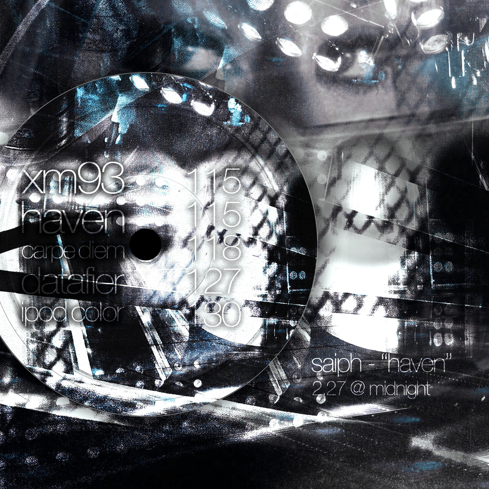

project page - ep
haven
HAVEN is a landing place for everything that comes next: machinery, memory, tranquility, nostalgia, and elegance inside one release system.

I wanted HAVEN to be a landing place for everything that is to come for my future. The blues and silvers represent emotions that are special to me throughout creating: tranquility, nostalgia, and elegance.
Every time I see this cover or take a listen, I appreciate the struggle-filled journey because it brought me to places I never thought I would trek on.

- CARPE DIEM
- HAVEN
- XM93
- DATAFIER
- IPOD COLOR